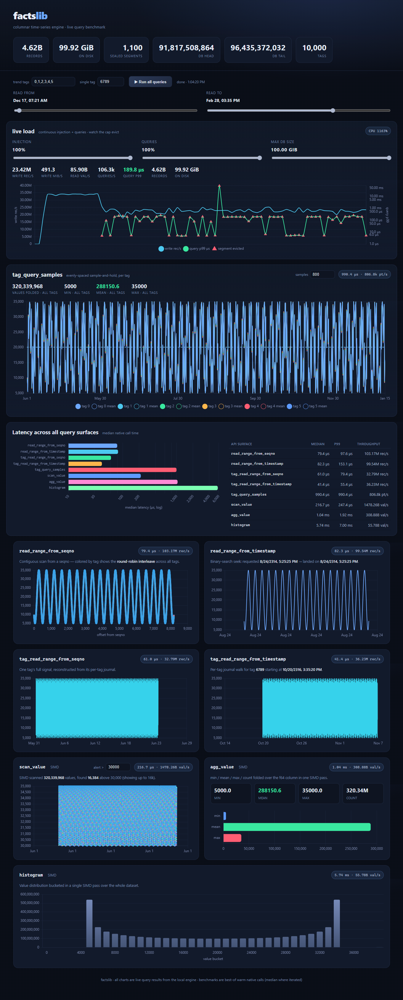

A time-series store that lives inside your process and answers in microseconds.
The honest loss: Facts stores about 96 bytes per point, while DuckDB and QuestDB compress to about 25. That's the price of keeping columns raw for SIMD scans.
A fact is a timestamp and a tag. Attach typed columns for fixed-size fields and a blob for everything else. Simple records are why it's fast.
The timestamp orders the fact. The tag names its series: a device, a symbol, a driver, a log source.
Everything is indexed on that pair, so "this tag, this window" works with nothing else declared.
Typed columns for a price, a temperature, an RPM. They're stored columnar, so a SIMD kernel streams one column at full memory bandwidth.
A query reads only the column it asks for, never the rest of the row.
Log lines, JSON, packets, Dry.Wire records. Stored opaque, with an optional plug-in codec such as LZ4 that decompresses transparently on read.
Good for logs and journals. See the Log Viewer.
Billions of records per box. The ceiling is your disk, with optional retention that evicts the oldest data.
Up to about 16 million series per shard and 256 MiB per blob.
Independent shards for parallel ingest and query. Throughput scales with cores, with no cross-shard coordination on the hot path.
Immutable, self-describing segments, each checksummed and recoverable on its own. One bad block never takes the dataset down.
Replication with veto-based failover. A stale replica can't win an election, so there's never a split-brain and the loss window is bounded. Break it yourself.
A periodic checkpoint sets the maximum loss window, and every segment verifies itself on open. Power loss doesn't corrupt the store.
SIMD-tuned for Intel, AMD and ARM, on Windows and Linux. The same engine on a server rack or a $35 board.
DuckDB is a fast in-process analytical engine. Same TSBS dataset (8.19 million rows of the standard time-series benchmark), same machine, warm. Facts ran on one core. DuckDB got all 32.
Medians from our open harness (Facts.Benchmarks) on real TSBS
cpu-only data. DuckDB got every advantage: all cores, its fastest bulk load
(Parquet COPY) and a host index. Facts wins every speed test on one core and
loses on storage density, because DuckDB compresses and Facts keeps data raw and
memory-mapped.
† Facts compresses blob payloads with a plug-in codec but keeps column data uncompressed on purpose: the hot columnar path stays raw for SIMD scans while bulky blobs still pack down.
The test above was in-process. This one goes over the network, the way you actually run QuestDB and InfluxDB, two of the most popular time-series databases. Same 8.19-million-row dataset, Ryzen 9 9950X, loopback, warm, durability matched.
Ingest runs about an order of magnitude ahead of QuestDB and two ahead of InfluxDB. The most common dashboard query, the latest reading for each sensor, comes back in tens of microseconds.
Medians and p99 from our open harness (Facts.Benchmarks,
--tier b) on real TSBS cpu-only data, each engine at its best
configuration. Why the gap: Facts speaks a compact binary wire format, while
QuestDB and InfluxDB use text line protocols where every number is spelled out in ASCII and
parsed again. Durable, too: re-run with every engine writing to NVMe instead
of RAM, Facts held 25 M rows/s. Where the rivals win: they compress
columns at rest, and both are full query languages (SQL and Flux, joins, ad-hoc queries)
with far bigger ecosystems. InfluxDB's v2/Flux engine is also known to be slow on these
access patterns; v3 would narrow the query gap.
Every demo is a real Facts engine serving real queries.

The harness kills the process mid-write, tears chunks on disk and corrupts the index, then checks what survives. Every test passes on both platforms.
The same run also measures reference numbers: warm, one core, synthetic data with one value column per point, best of 20.
| Measure | LinuxRyzen 9 9950X | WindowsRyzen 9 7950X3D |
|---|---|---|
| Ingest, 1 core | 92.7M points/s | 88.9M points/s |
| Latest value | 390 ns | 600 ns |
| SIMD column scan | 85.7 GB/s | 26.2 GB/s |
| Ingest while querying | 74.6M points/s | 57.2M points/s |
| Query p99 during ingest | 5.7 µs | 4.6 µs |
| Alert scan, 16.8M readings | 2.6 ms | 4.6 ms |
| Storage per point | 30 B | 30 B |
This is a different harness and dataset from the head-to-heads above, so the numbers won't match them exactly. Storage is 30 B here because each point has one value column; TSBS rows carry ten.
Facts isn't public yet. If you have time-series data that needs to be faster, tell us what you'd build and we'll talk.
info@drylane.io